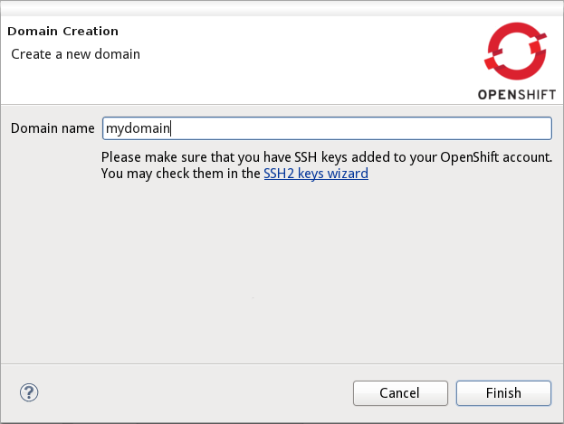
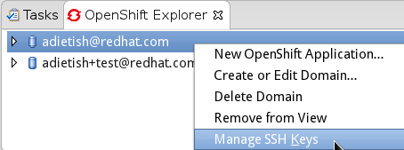
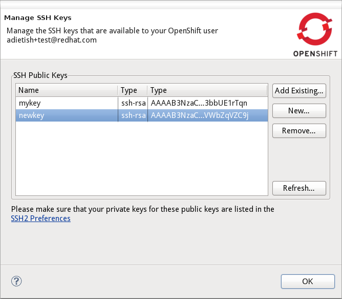
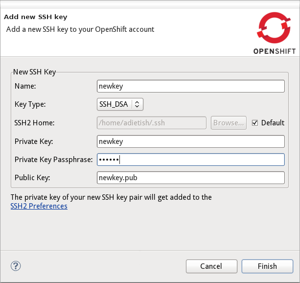
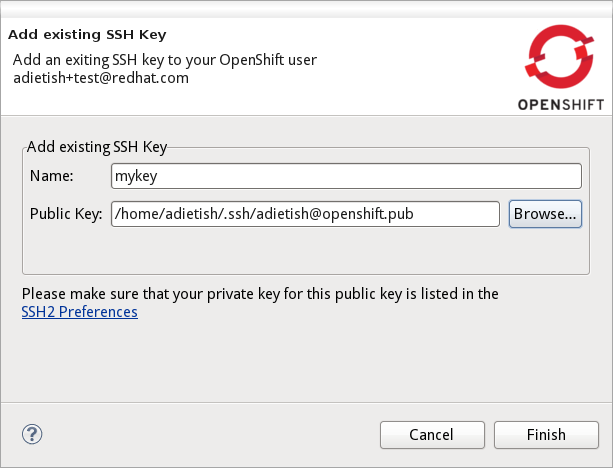

General
|
|
"Commit and Push" contributed to EGit
|
Prior versions of JBoss Tools for OpenShift added a "Commit and Push" action to the git context menu.
We now removed this and contributed this functionality to the commit dialog in Eclipse EGit.
You can read about it in the EGit 2.1 New and Noteworthy
Related Jira,
EGit commit dialog,
EGit staging view
|
|
|
EGit repo corruption fixed
|
We discovered a problem where EGit was corrupting a git repository. The corruption occurred if you deleted a git-shared project
and created a new project and git repository with the very same name.
We contributed the fix to EGit and it'll be available in EGit 2.1.
Related Jira,
Related Eclipse bugzilla
|
OpenShift Domain wizard
|
|
Separated keys from domain creation
|
So far you had to provide your SSH when you created your domain. This was far from ideal since there was no way to add keys
once you had your domain. We now provide a whole new wizard that is dedicated to managing your OpenShift keys.
If you now create a domain you will only have to choose a name for it. There's no choosing a key any more.
A link in the bottom of the domain wizard allows you to get to the keys management wizard.

Related Jira
|
OpenShift application wizard
|
|
Can't create if no public keys
|
We'll check if you have any public SSH keys on OpenShift once you're up to create a new OpenShift application.
We'll display an error if you haven't. A link allows you to get to the SSH management wizard where you can
create and add the required key(s).

Related Jira
|
SSH Keys Management wizard
|
|
New SSH Keys management wizard
|
In Alpha2 we now added a whole new wizard that allows you to manage your ssh keys on OpenShift.
You'll get there from the context-menu in the OpenShift Explorer.
We also provide links to it when you create a domain or application.

Once you are in the wizard you'll spot the public keys you already added to OpenShift.

Buttons allow you to get to dialogs to create a whole new keypair or add your existing key:


The wizard of course also allows you to remove keys from OpenShift.
Related Jira
|